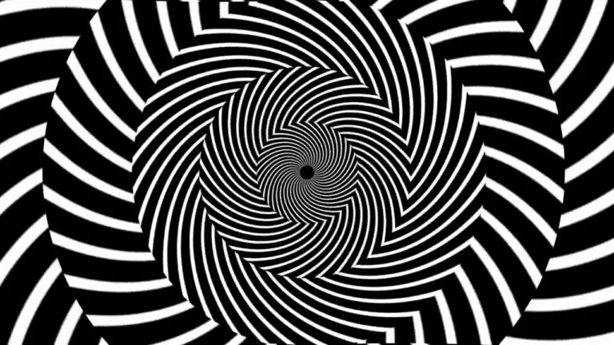

Brain Areas Impacted by Hypnotic Trances
James CameronBefore reading this get into a comfortable postion, maybe you are sitting down in a chair. Let your body completely melt into your preferred postion of rest. As you sink in close your eyes and imagine that you are on a beach with bleach white sand, warm weather that puts you at ease, and water that sparkels like lapis. Hypnosis has the power change our minds and body. The changes occur with in a few regions in our brain.

In numerous expirements, scientist have conducted brainscans during guided hypnosis sessions. Doctor David Spiegel specializes in researching in psychotherapy and believes hypnosis is very powerful because it can change "the way we use our minds." Hypnosis can alter our perception of both our surroundings and our bodies. Dr Speigel conduted a study using 57 subjects. 36 of the subjects are "highly hypnotizable" and 21 are challenging to hypnotize. The subjects brains are measured by detecting changes in blood flow and scanned under 4 different tests - resting, recalling, and 2 hypnosis sessions. The testing unveiled 3 hallmarks of the brain during hypnosis. The first difference is a decrease in activity in the dorsal anterior cingulate which plays a role in cognition and motor control. The second difference is an increased connections in the insular cortex(risk-reward behavior) and dorsolateral prefrontal cortex which can be thought as the executive part of the mind important for seeting tasks, planning and working memory. The third difference is an observable reduction in connections between the dorsolateral prefrontal cortex and the default mode network this might represent a disconnect between action and awareness of the action. For more information on this study click the referance below.
Study identifies brain areas altered during hypnotic trances